- 发帖数量：13 帖（共 28 张图，另有 2 个 PDF 附件）
- 时间范围（美西 PDT）：2026-10-24 01:30 — 2026-10-24 16:44 （对应北京时间 10-24 16:30 — 10-25 07:44）
今日要点速览
黄金在避险情绪升温时反常下跌、跌回 4000 美元支撑区，而中东冲突再升级让油价风险继续偏上——"避险资产不避险、通胀压力还没走"是今天的主线。 围绕这条主线，Jason 贴了巴克莱的原油报告、zerohedge 的中东局势汇总、Katusa 的黄金技术位，以及中金对机构投资者的最新调查（主流判断"滞胀"、AI 泡沫担忧上升、偏好转向黄金和债券）。长线方面有两篇论文：IMF 说美国国债"供给冲击"会把全球长期利率一起抬高；NBER 论文说 AI 时代的增长瓶颈可能是"储蓄/资本积累"而非技术，且会严重拉大劳动者与资本所有者的差距——这与高盛"美股 47% 在最富 1% 手里"、摩根大通"2040 年 72% 的工作任务受 AI 影响"的图表形成呼应。另外还有中日两国的婚育与退休潮人口数据。
帖 1 · 2025 年全国初婚人数 1042 万（美西 10-24 01:30）
2025 年中国初婚人数回升到约 1042 万人，比 2024 年多了 100 多万，但"初婚占全部结婚的比例"仍比 20 年前低了十几个百分点。读全文收起
帖子原文
2025年全国初婚人数为1042.33万人 #自制图表#

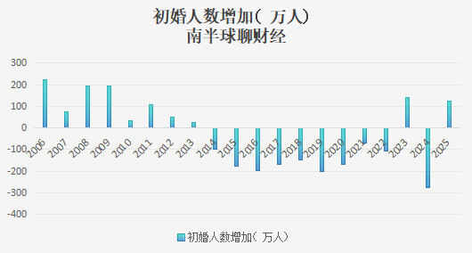
背景与关键数据
- 初婚 vs 结婚：民政部统计的"结婚登记"按对计，而"初婚人数"按人计——一对新人里两个人都是第一次结婚，就算 2 个初婚人；如果有一方是再婚，就只算 1 个。
- 初婚占比（图 1）= 初婚人数 ÷ 结婚总人数。它下降有两层含义：一是再婚人群变多（离婚率上升后再婚），二是适龄的"第一次结婚"人群本身在缩小。
- 1042 万这个数字的意义：初婚人口是"未来几年出生人口"最直接的先行指标——中国的生育绝大多数发生在婚内，初婚一般领先头胎出生 1–2 年。
图片解读
- 图 1《初婚/结婚占比》：横轴 2005–2025 年，纵轴是百分比（75%–93%）。2005–2012 年大致稳定在 89%–90%；2013 年后加速下滑，2019 年跌到约 75.5% 的低点；2020–2023 年缓慢回升到约 77.7%；2024 年又跌回约 75.3%；2025 年回升到约 77%。
- 图 2《初婚人数增加（万人）》：每年初婚人数比上一年多/少多少。2006–2013 年基本是正增长（2006 年 +220 万左右，2008、2009 年都接近 +195 万）；2014–2022 年连续 9 年负增长，每年少 100–200 万；2023 年反弹约 +140 万（疫情后补登记）；2024 年骤降约 −275 万（补偿效应消退，叠加"无春年"说法）；2025 年再反弹约 +125 万。
为什么重要 / 对市场和经济的含义
- 初婚人数回升是对 2026–2027 年出生人口的一点正面信号，但量级上仍远低于 2013 年前后的高峰（当时初婚人数在 2000 万以上的量级）。
- 对市场的影响链：婚姻 → 生育 → 母婴、教育、婚庆、住房需求。2025 年的反弹更多带有"2024 年低基数 + 补偿"的性质，能否持续要看 2026 年数据。
- Jason 把它做成"自制图表"，大概率是想提醒：单年反弹 ≠ 趋势反转，看图 2 的长期结构，过去十年基本是持续萎缩。
延伸知识
- "婚姻挤压"与适龄人口结构：初婚人数主要取决于 22–32 岁人口的规模。中国 1990 年后出生人口逐年下降（1990 年约 2390 万，2000 年约 1770 万），所以现在进入婚龄的人群本身就少，这是"结构性"下降，靠政策很难完全扭转。可以类比为：水龙头（出生人口）二十多年前就关小了，现在水池（婚龄人口）自然越来越浅。
- "无春年"效应：民间认为农历年里没有"立春"不宜结婚，2024 年（甲辰年）被部分人视为"寡妇年"，这类文化因素会让结婚在年份之间"挪动"，造成一年低、一年高的锯齿形。
帖 2 · FT：黄金在避险时反而下跌，2008 年以来罕见（美西 10-24 02:13）
黄金这周同时违背了两条"常识"——市场避险时它没涨、利率下降时它也没涨，这种背离上一次出现是 2008 年 12 月金融危机最严重的时候。读全文收起
帖子原文
FT： 周五，现货黄金价格一度跌至每盎司3,986.50美元，随后收复部分失地。德国私人银行贝伦贝格（Berenberg）的分析师表示，黄金在整体市场风险偏好下降的背景下仍然下跌，是一种"值得注意的背离现象"。黄金通常被视为避险投资工具。与此同时，债券收益率下降通常有利于黄金，因为黄金本身并不产生利息收益。然而，本周市场却出现了不同寻常的情况。贝伦贝格分析师指出，上一次出现美国国债收益率大幅下降、但黄金表现依然如此疲弱的情况，还要追溯到2008年12月，即全球金融危机最严重的时期之一。
上周，在《金融时报》举办的贵金属峰会上，多位基金经理表示，他们仍然预计黄金价格会出现反弹。世界黄金协会高级市场策略师约翰·里德（John Reade）在峰会上表示，战争及其对金融市场造成的连锁影响，正在使黄金价格剧烈波动。根据世界黄金协会的初步数据，9月份全球中央银行购买黄金的规模，达到2024年11月以来的最高月度水平。第三季度黄金ETF需求也出现反弹。 #金融#
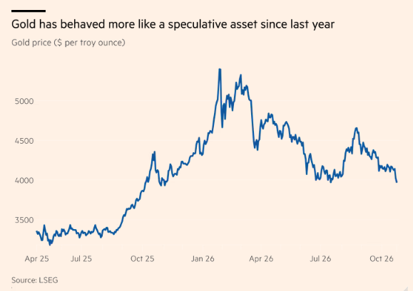
背景与关键数据
- 黄金的两大传统驱动：
- 避险属性：风险事件（战争、危机）时资金涌入黄金。
- 实际利率：黄金不生息，持有它的"机会成本"就是放弃的利息。利率下降 → 机会成本下降 → 黄金应该涨。
- 本周异常：风险偏好下降 + 美债收益率下降，按理黄金双重利好，结果反而跌破 4000 美元（盘中 3986.5）。
- 支撑黄金的基本面仍在：9 月全球央行购金量是 2024 年 11 月以来最高的单月；三季度黄金 ETF 需求回升。
图片解读
- FT 图《Gold has behaved more like a speculative asset since last year》（自去年以来，黄金表现得更像投机资产），数据来源 LSEG。横轴 2025 年 4 月—2026 年 10 月，纵轴美元/盎司。
- 走势：2025 年 4–8 月在 3300 美元附近横盘 → 2025 年 9–10 月急涨到约 4300 → 2026 年 1–2 月冲到约 5400 的历史高点 → 3 月急跌到约 4400 → 7 月跌到约 4000 → 9 月反弹到约 4650 → 10 月再次回落到 4000 下方。
- FT 用"投机资产"来形容，是指它的波动方式（暴涨暴跌、大幅回撤）已经不像一个稳定的避险资产，更像一个被趋势资金和杠杆驱动的商品。
为什么重要 / 对市场和经济的含义
- "危机式"背离的含义：2008 年 12 月黄金也曾在利率暴跌时走弱，原因是机构为了补保证金、应付赎回而**"卖能卖的东西"**——黄金流动性好，成了提款机。如果这次也是这个机制，说明市场某处有流动性压力。
- 另一种解释：2026 年初的暴涨里积累了大量投机仓位，现在在去杠杆、去拥挤，跟避险需求无关。
- 央行仍在大买，意味着"长期底部买盘"存在；短线由投机资金主导。Jason 连贴三帖黄金（帖 2、帖 6、帖 10 的调查），显然在关注黄金是否在 4000 一线企稳。
延伸知识
- "流动性螺旋"（Liquidity Spiral）：危机时资产价格下跌 → 保证金要求上升 → 被迫卖出 → 价格进一步下跌。这时连优质资产（黄金、国债）也会被一起卖出，被称为"相关性趋于 1"。就像火灾时大家都往门口挤，不管你手里拿的是什么，都得先扔下。
- 央行购金的逻辑：2022 年俄罗斯外汇储备被冻结后，许多新兴市场央行加速买金，因为黄金放在自己金库里"不会被制裁冻结"。这是近年黄金的长期结构性买盘。
帖 3 · 摩根大通：未来 10–15 年全球股票年化回报 7–8%（美西 10-24 15:18）
摩根大通资管的 2027 年"长期资本市场假设"（LTCMA）认为：美股赚钱能力最强，但因为现在太贵了，未来长期回报（7.5%）反而略低于除美国外的发达市场（7.6%）。读全文收起
帖子原文
JPM： 未来10-15年全球股票年均回报率为7-8%，美股预计拥有更强的收入增长，但由于起始估值较高，其长期预期回报反而略低于其他发达市场。 #股市#
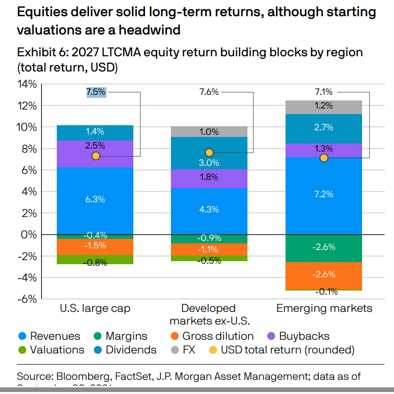
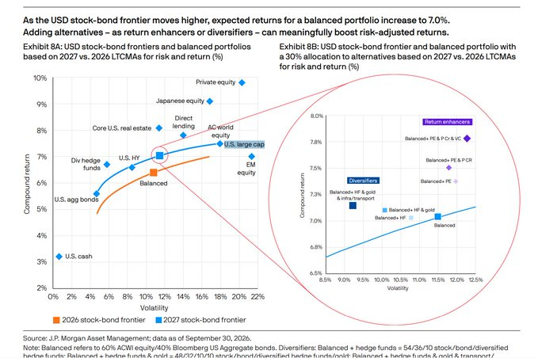
背景与关键数据
- LTCMA（Long-Term Capital Market Assumptions）：摩根大通资产管理每年发布的未来 10–15 年各类资产预期回报，养老金、保险公司常用它做资产配置。
- 股票回报的"积木拆分"：长期股票回报 ≈ 营收增长 + 利润率变化 − 股本稀释 + 估值变化 + 回购 + 股息 + 汇率。
- 起始估值：买入时越贵，未来估值"均值回归"的拖累越大。就像同一家店，你花 10 倍利润买和花 30 倍利润买，未来年化回报会差很多。
图片解读
- 图 1《Exhibit 6：2027 LTCMA 各地区股票回报构成》（美元计总回报）：
构成 美国大盘股 美国以外发达市场 新兴市场 营收增长 +6.3% +4.3% +7.2% 利润率变化 −0.4% −0.9% −2.6% 股本稀释 −1.5% −1.1% −2.6% 估值变化 −0.8% −0.5% −0.1% 回购 +2.5% +1.8% +1.3% 股息 +1.4% +3.0% +2.7% 汇率 — +1.0% +1.2% 合计（取整） 7.5% 7.6% 7.1% 看点：美股营收增长和回购都最强，但估值拖累 −0.8% 是三者里最大的，股息贡献也最少（因为股价高、股息率低）；非美发达市场靠高股息（3.0%）和美元贬值预期（+1.0%）追平。 - 图 2《Exhibit 8A/8B：股债有效前沿》：横轴波动率、纵轴复合回报。蓝线（2027 版）整体高于橙线（2026 版），意思是同样的风险能拿到更高的预期回报——主要因为债券收益率更高了。经典 60/40 股债组合的预期回报从约 6.4% 升到 7.0%。散点里：私募股权约 9.8%（波动约 20%）、日本股票约 9.1%、美国现金约 3.2%、美国综合债约 5.6%。右边放大图显示：在 60/40 基础上加 30% 另类资产（私募股权、私募信贷、对冲基金、黄金、基础设施），回报可提升到约 7.2%–7.8%，或在同等回报下降低波动。
为什么重要 / 对市场和经济的含义
- 对美股的"温和警告"：不是说美股会崩，而是"高估值会吃掉一部分未来回报"。这和帖 12 高盛的图（家庭股票配置和 CAPE 都在历史高位）形成呼应。
- 股债组合重新有吸引力：利率上升后，债券的预期回报变高，60/40 组合的"吃饭钱"回来了。
- 对普通投资者：长期 7–8% 是一个合理的锚，若有人承诺长期 20% 以上的年化，要打个问号。
延伸知识
- "估值是长期回报最好的预测变量"：席勒的 CAPE（周期调整市盈率）与未来 10 年回报呈明显负相关——CAPE 越高，未来 10 年回报越低。但它对短期（1 年内）几乎没有预测力，所以"贵"不等于"马上跌"。
- 有效前沿（Efficient Frontier）：马科维茨现代组合理论的核心——在每一个风险水平上找到回报最高的组合，连成一条曲线。曲线整体上移，说明"市场给的风险补偿变多了"。
帖 4 · 巴克莱：伊朗冲突难解，油价短期风险偏上（美西 10-24 15:37）
库存已经被耗光、需求又在回来，伊朗问题短期解决无望，所以巴克莱认为油价短期还是"涨的风险大于跌的风险"。读全文收起
帖子原文
巴克莱： 中东石油供应虽然正在恢复，但全球石油库存已经大幅消耗，需求又开始回升。随着伊朗冲突短期结束的希望减弱，石油现货市场正在变得更加紧张，短期油价风险仍然偏向上涨。不过，如果未来俄罗斯与乌克兰的冲突能够得到解决，柴油市场可能随着时间推移获得实质性缓解。 #金融#
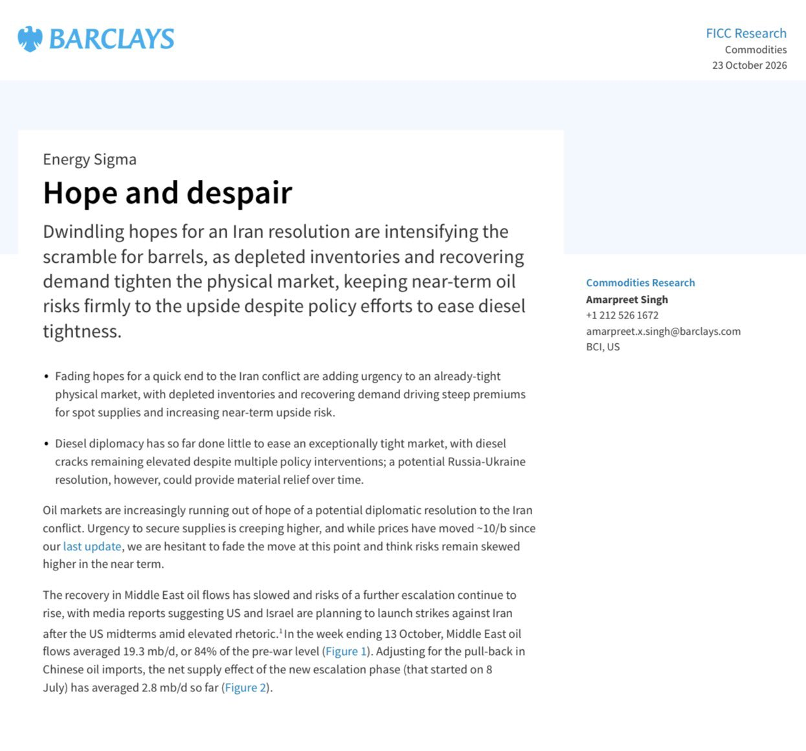
背景与关键数据
- 报告：巴克莱大宗商品研究 Energy Sigma 系列，2026-10-23，标题《Hope and despair》（希望与绝望）。
- 关键数字（截图正文）：
- 截至 10 月 13 日那一周，中东石油流量平均 1930 万桶/日，只恢复到战前的 84%。
- 自 7 月 8 日"新一轮升级"开始以来，扣除中国减少进口的影响后，净供应损失平均约 280 万桶/日。
- 自上次报告以来油价已涨约 10 美元/桶，但巴克莱"不愿逆势做空"。
- 媒体报道美国和以色列计划在美国中期选举之后对伊朗发动打击。
- 术语：
- 现货溢价 / 现货市场紧张：立刻要货的人愿意付比远期更高的价格，说明眼下缺货。
- 柴油裂解价差（Diesel crack）：柴油价格减原油价格，代表炼厂炼柴油的利润。价差高 = 柴油特别紧缺。
- "柴油外交"：各国通过政策手段（放储、出口限制等）试图压低柴油价格，但效果有限。
图片解读
- 图片是巴克莱报告首页截图，包含标题、两个要点和正文前两段（上面"关键数字"即来自此图）。要点一：伊朗冲突快速结束的希望消退，让本已紧张的实货市场更急迫，现货溢价陡峭；要点二：柴油外交收效甚微，但俄乌冲突若能解决，柴油可能明显缓解（俄罗斯是全球最大柴油出口国之一）。
为什么重要 / 对市场和经济的含义
- 库存是油价的"减震器"：库存充足时，供应中断可以靠库存缓冲；库存耗尽后，任何新的扰动都会直接反映到价格上，价格波动会被放大。
- 对通胀和利率：结合帖 10 中金调查（布油约 110 美元、美联储 9 月已开始加息、10 年美债一度 5.3%），高油价是"滞胀"叙事的核心燃料，会让美联储更难放松。
- 时间节点：美国中期选举（11 月 3 日）之后是巴克莱提示的风险窗口。
延伸知识
- 期货曲线的"Backwardation（现货升水）"与"Contango（期货升水）"：现货比远期贵叫 backwardation，通常意味着眼下缺货；反之叫 contango，意味着供给充足、囤货有利可图。看油价期货曲线的形状，比只看单一油价更能判断供需松紧。
- 为什么柴油比汽油更"要命"：柴油驱动卡车、船舶、农机和工业设备，柴油贵会直接推高物流和食品成本，对通胀的传导比汽油更广。
帖 5 · zerohedge：第三支航母打击群开赴波斯湾（美西 10-24 15:45）
美伊对抗明显升级：美国加派第三支航母打击群，伊朗、胡塞武装、以色列多线同时紧张，中东"再开战"的风险在中期选举后显著上升。读全文收起
帖子原文
zerohedge： 美国已派遣第三支航母打击群及1万名额外水兵和海军陆战队员前往波斯湾，伊朗正准备在中东地区进行报复。 #其他国家经济#
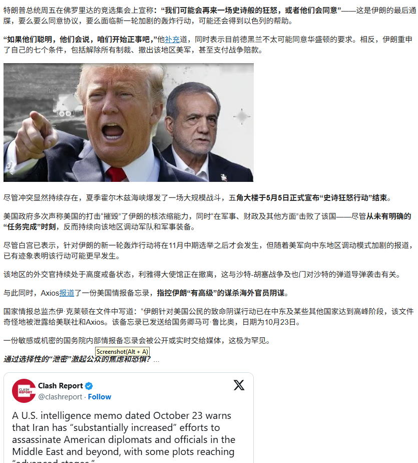
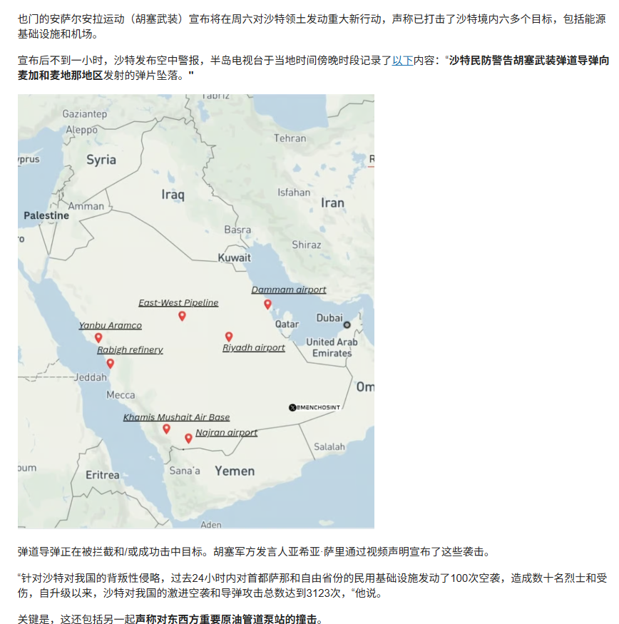
背景与关键数据
- 航母打击群：由一艘航母加驱逐舰、巡洋舰、潜艇、补给舰组成的作战编队。同一区域部署三支航母打击群是非常高的军事姿态，通常意味着为大规模行动做准备。
- 图中要点（中文转述）：
- 特朗普在佛罗里达竞选集会上称"要么来一场史诗般的狂怒（Epic Fury），要么他们同意"，伊朗则提出 7 个条件（解除所有制裁、撤出美军、甚至支付战争赔款）。
- 五角大楼曾于 5 月 5 日宣布"史诗狂怒行动"结束，但此后美军持续向中东增兵。白宫称新一轮轰炸要到 11 月中期选举之后，但有迹象显示可能提前。
- 美国驻利雅得使馆在撤离，与沙特—胡塞战争、也门对沙特的弹道导弹袭击有关。
- Axios 报道一份 10 月 23 日的美国情报备忘录，称伊朗针对美国外交官的暗杀图谋"大幅增加"。
图片解读
- 图 1：zerohedge 文章截图，特朗普与伊朗总统佩泽希齐扬的合成照片，配文为上述最后通牒和情报备忘录内容，并嵌入 Clash Report 的推文。
- 图 2：胡塞武装宣布对沙特发动"重大新行动"的地图。标出的目标包括：延布（Yanbu）阿美石油设施、拉比格（Rabigh）炼油厂、东西输油管道（East-West Pipeline）、利雅得机场、达曼机场、哈米斯穆谢特空军基地、奈季兰机场。胡塞称还袭击了东西输油管道的泵站。
- 图 3：以色列大选前，内塔尼亚胡下令在约旦河西岸发动大规模军事行动（起因是两名巴勒斯坦枪手在希伯伦附近检查站打死两名以军士兵），并称"赢得选举后要推翻伊朗政权、消灭哈马斯和真主党"。
为什么重要 / 对市场和经济的含义
- 东西输油管道是关键：它把沙特东部油田的原油输送到红海边的延布港，是绕开霍尔木兹海峡的主要出口通道。如果霍尔木兹受阻、这条管道又被打，沙特的"备用出口"也会受损——这正是帖 4 巴克莱说"现货紧张、风险偏上"的地缘根源。
- 三个政治时间点叠加：美国中期选举（11 月初）、以色列大选、伊朗的强硬条件——市场会给"选后升级"定价，体现为油价的风险溢价和波动率上升。
- 对资产：油价↑、航运保险费↑、通胀预期↑；理论上利好黄金，但帖 2 显示黄金这次并没涨，这正是"背离"值得关注的原因。
延伸知识
- "地缘风险溢价"：油价里有一部分不是由实际供需决定，而是市场对"可能断供"的担忧定价。冲突缓和时这部分会迅速消失（俗称"买预期、卖事实"）。
- 霍尔木兹海峡的重要性：全球约 1/5 的石油贸易经过这条海峡。沙特东西管道和阿联酋的哈布善—富查伊拉管道是仅有的两条大规模"绕行通道"，所以它们一旦被袭击，市场反应会很剧烈。
帖 6 · Katusa：黄金回到关键支撑区（美西 10-24 15:58）
黄金回到了 3950–4050 美元的支撑区、RSI 接近超卖，但还在 100 日均线下方，守住 3950 才有反弹基础，跌破就要重新找底。读全文收起
帖子原文
Katusa： 上一次金价下跌到这里时，市场出现了足够强的买盘，推动价格明显反弹。技术分析把这种曾经吸引买盘的价格区域称为支撑区间。如今，黄金价格再次回到这一支撑区域，其日线相对强弱指标（RSI）已经降至33，正在接近超卖区间。黄金价格目前仍然低于100日移动平均线，尚未出现足以确认趋势反转的技术证据。如果黄金跌破3,950美元并持续在其下方交易，原有支撑区间就可能失效，市场需要重新寻找新的价格支撑。 #金融#
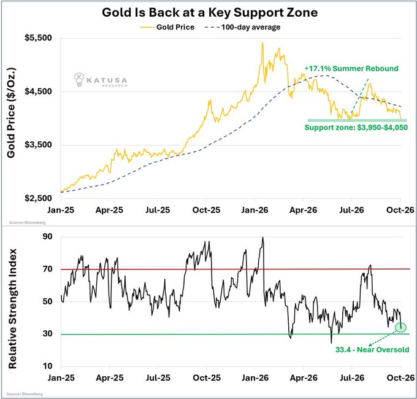
背景与关键数据
- 支撑区间：过去价格跌到这里时有大量买盘接住，市场"记住"了这个价位。
- RSI（相对强弱指数）：0–100 的动量指标，衡量最近涨跌的力度。一般 >70 算"超买"（涨太猛），<30 算"超卖"（跌太猛）。现在 33.4，接近超卖。
- 100 日移动平均线：过去 100 个交易日收盘价的平均，代表中期趋势。价格在均线下方 = 中期趋势仍向下。
图片解读
- 上图《Gold Is Back at a Key Support Zone》（Katusa Research，数据来自 Bloomberg）：黄色线是金价，蓝色虚线是 100 日均线。2025 年 1 月约 2650 美元起步，2026 年 1 月冲到约 5400 的顶部，此后回落；2026 年 6–7 月在绿色支撑带 3950–4050 止跌，随后出现 +17.1% 的夏季反弹（到约 4650），但反弹没能站稳均线，现在又跌回支撑带。100 日均线目前约 4200，向下倾斜。
- 下图 RSI：红线 70（超买）、绿线 30（超卖）。2025 年 10 月、2026 年 1 月 RSI 一度高达 85–90（极度超买，事后看都是阶段顶部）；2026 年 3 月、5 月曾跌到 25–28；目前 33.4，接近超卖。
为什么重要 / 对市场和经济的含义
- 这是帖 2 的"技术面补充"：基本面上有央行买盘、有地缘风险，技术面上价格到了历史买盘区——多空在 4000 附近决战。
- 实操含义：3950 是一条"证伪线"。守住，可能复制夏季的反弹；有效跌破，说明此前的买盘已撤退，下一个支撑可能更低。
- 但"接近超卖"不等于"马上反弹"，在下跌趋势中 RSI 可以长时间处于低位。
延伸知识
- "支撑变阻力"：一个支撑位一旦被有效跌破，往往会变成未来反弹时的阻力位——因为之前在那里买入的人被套，回到成本价时会卖出解套。
- 技术分析的局限：支撑、RSI 本质是"市场参与者的集体记忆和行为习惯"，在重大基本面冲击（如帖 2 提到的流动性挤兑）面前可能失效。最好与基本面（实际利率、央行购金、ETF 流量）一起看。
帖 7 · 日本人口动态：出生几乎不降、死亡降 5%、8 月结婚暴增 61.8%（美西 10-24 16:02）
日本今年人口自然减少放缓了，但每年仍"净少"约 85 万人；最惊人的是 8 月结婚登记同比暴增 61.8%。读全文收起
帖子原文
日本厚生劳动省： 2026年前8个月，日本出生人口同比几乎没有下降，而死亡人口减少了5%。因此，人口自然减少的速度明显放缓。不过，这不意味着日本已经摆脱人口危机。因为过去12个月出生70.54万人，死亡155.15万人。虽然东京是日本最大的就业与人口集聚中心，但2026年前8个月死亡人数仍然超过出生人数约3万人。部分老龄化程度较高的地区，自然减少压力尤其明显。例如秋田，前8个月死亡人数约为出生人数的5.37倍。北海道的死亡人数也超过出生人数三倍。特别值得注意的是，8月结婚登记数量同比大增61.8%。 #其他国家经济#
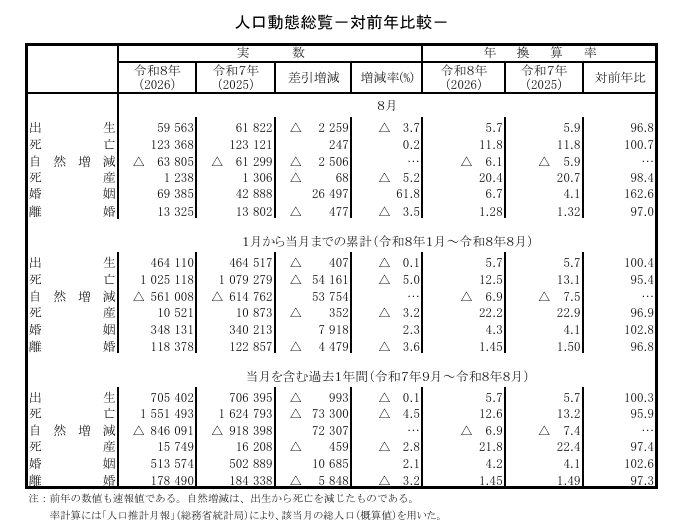
背景与关键数据
- 自然增减 = 出生 − 死亡（不含移民）。
- 为什么死亡减少了 5%：可能是 2025 年的高基数（流感/高温等导致死亡偏多）消退，属于正常波动，不代表趋势改变。
- 为什么出生几乎没降：2026 年是干支纪年的"丙午"年。日本有"丙午年出生的女孩性格刚烈"的迷信，1966 年（上一个丙午年）出生人数骤降约 25%。今年出生几乎没降，说明这个迷信的影响在年轻一代中已大为减弱——这本身是个有意思的社会学信号。
- 8 月结婚暴增：很可能与"令和 8 年 8 月 8 日"这种吉利日期扎堆登记有关（8 在日语文化里也有"末広がり、越来越好"的寓意），属于日期效应，单月数据要谨慎解读；1–8 月累计结婚仅 +2.3%。
图片解读
- 《人口動態総覧—対前年比較》（人口动态速报，令和 8 年 = 2026 年，令和 7 年 = 2025 年，"△"表示负数）分三块：
指标 8 月单月 1–8 月累计 过去 12 个月 出生 59,563（−3.7%） 464,110（−0.1%） 705,402（−0.1%） 死亡 123,368（+0.2%） 1,025,118（−5.0%） 1,551,493（−4.5%） 自然增减 −63,805 −561,008（去年 −614,762） −846,091（去年 −918,398） 结婚 69,385（+61.8%） 348,131（+2.3%） 513,574（+2.1%） 离婚 13,325（−3.5%） 118,378（−3.6%） 178,490（−3.2%） - 千分率：出生率约 5.7‰，死亡率约 12.6‰——死亡人数是出生的两倍多。
为什么重要 / 对市场和经济的含义
- 日本每年净减少约 85 万人，相当于每年消失一个中等城市。这推动了日本劳动力短缺 → 工资上涨 → 通胀回归 → 日本央行加息这一几年来的宏观主线。
- 对比帖 1（中国初婚）和帖 11（中国退休潮），Jason 在今天集中贴人口话题，可以看出他把人口当作理解长期利率、劳动力和财政压力的底层变量。
延伸知识
- "丙午迷信"实验：1966 年日本出生人数从前一年的约 182 万骤降到约 136 万（降幅约 25%），1967 年又反弹到约 193 万，经济学家常把它当作"文化预期如何影响生育决策"的天然实验。2026 年的数据说明这种影响已基本消失。
- 人口自然减少 vs 人口总量：日本近年靠外国劳动者流入部分抵消自然减少。看人口要同时看"自然增减"和"社会增减（移民）"。
帖 8 · IMF 论文：美国国债"供给冲击"会抬高全球利率（美西 10-24 16:09）
不只美联储能"牵动全球利率"，美国财政部发债发得比预期多，也会把全球长期利率一起推高，并拖累各国实体经济。读全文收起
帖子原文
IMF论文： 过去讨论美国对全球经济的影响，我们往往关注美联储。但作者提出：即使美联储不加息，只要美国财政部超预期增加国债供给，也可能推高全球利率、压缩全球投资，并拖累其他国家的实体经济。
本文研究美国国债供给冲击的国际溢出效应，利用美国国债拍卖公告前后收益率的变化识别冲击。研究发现，美国国债供给冲击会显著传导至全球长期利率。当债务扩张冲击使美国10年期国债收益率上升10个基点时，外国10年期国债收益率会在数个交易日内上升约7个基点。从月度数据来看，这种冲击具有收缩性的实体经济影响。美国工业生产在8个月后最多下降约0.4%，外国工业生产也出现约0.4%的下降，而且持续时间更长。外国经济收缩主要通过金融条件收紧、汇率贬值和美国需求减弱传导。各国受到的影响并不相同。外国投资者持有本国债券的比例越高，冲击通常越大。外国投资者参与度从第25百分位上升至第75百分位，工业生产的降幅会进一步扩大约0.5个百分点。
美国国债供给冲击向全球传导，主要由期限溢价（Term Premium）驱动，而不是未来短期无风险利率的预期。美联储可以通过降息压低短期利率，但未必能够完全抵消财政融资压力对长期利率的推升。这不是说财政扩张必然导致长期利率上升，而是说，在供给超出市场预期的条件下，存在一条独立于传统货币政策的利率传导渠道。如果美国国债供给冲击会带动其他国家长期国债收益率一起上升，那么：买入不同国家的长期国债，不一定就实现了充分的利率风险分散。 #论文或书籍推荐#
📎 附件：wpiea2026229-source-pdf.pdf（IMF 工作论文原文 PDF，未在本报告中展开阅读，以上内容基于 Jason 的摘要）
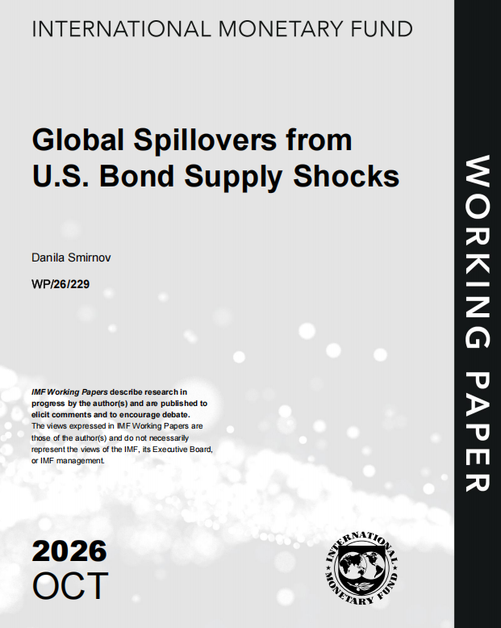
背景与关键数据
- 论文：IMF Working Paper WP/26/229，Danila Smirnov，《Global Spillovers from U.S. Bond Supply Shocks》（美国国债供给冲击的全球溢出），2026 年 10 月。
- 识别方法：财政部每季度会公布发债计划（"再融资公告"，Quarterly Refunding Announcement）。作者看公告前后几分钟/几小时收益率的变化——这么短的时间窗口内，收益率变动基本只能归因于"发债量超预期"，从而把它和其他因素分开。
- 核心数字：
- 美 10 年期收益率因供给冲击上升 10bp → 外国 10 年期收益率几天内上升约 7bp（传导率约 70%）。
- 8 个月后美国工业生产最多下降约 0.4%；外国工业生产也降约 0.4%，且持续更久。
- 外国投资者持债比例从第 25 百分位升到第 75 百分位，工业生产降幅再多约 0.5 个百分点。
- 期限溢价（Term Premium）：投资者持有长期债券（而不是滚动买短期债）所要求的额外补偿。长期利率 ≈ 未来短期利率的平均预期 + 期限溢价。美联储能控制前者，但控制不了后者。
图片解读
- 图片是 IMF 工作论文封面：标题、作者、编号 WP/26/229、日期 2026 年 10 月，以及"工作论文仅代表作者观点、不代表 IMF"的免责声明。
为什么重要 / 对市场和经济的含义
- 当下的现实意义：美国赤字高企、发债量持续增加，帖 10 中金调查提到 10 年期美债一度 5.3%、目前约 4.95%。这篇论文给出了一个解释：长端利率居高不下，可能部分来自"供给压力推高期限溢价"，即使美联储降息也压不下去。
- 对全球投资者："买多国长期国债来分散利率风险"的效果会打折——因为大家会被美债一起带着走。
- 对新兴市场：外资持债比例高的国家受冲击更大，意味着这些国家的汇率和金融条件更脆弱。
延伸知识
- "美元霸权的另一面"：美债是全球定价之锚，所以美国的财政决策会通过"全球无风险利率"影响所有国家的融资成本——这被称为美国的"嚣张特权"（exorbitant privilege），而其他国家承受的是"溢出成本"。
- "债券义警"（Bond Vigilantes）：当市场认为政府借太多钱时，会抛售国债推高利率，倒逼政府收紧财政。1990 年代克林顿的顾问卡维尔曾说"下辈子想做债券市场，因为它能吓唬所有人"。
帖 9 · NBER 论文：《为机器储蓄》——AI 时代增长的瓶颈是资本积累（美西 10-24 16:16）
如果 AI 能做越来越多的工作，经济能增长多快取决于"社会愿意存多少钱去造机器"；同一套技术，储蓄率最优时年增长 11.7%，按美国现有 23% 储蓄率只有 2.2%——而没资产的劳动者可能福利大幅下降。读全文收起
帖子原文
NBER论文： 《为机器储蓄》：假设AI和机器人真的能够完成越来越多的人类工作，那么决定经济增长速度的，可能不再主要是技术进步，而是整个社会愿意把多少收入转化为机器资本。作者提出了一个看似矛盾的结论：AI可能让整个社会空前富裕，却让依靠劳动收入、没有资产的人变得更加贫穷。而且，经济增长率、储蓄率、劳动工资、资本收益率、长期债券利率和股票估值，可能同时发生剧烈变化。
当机器能够执行越来越多的生产任务时，经济增长取决于两个方面：一是生产任务的结构如何影响积累机器资本的回报，二是资本积累对这些回报的反应有多强。本文认为，在标准的任务模型中，资本供给决定自动化所带来的经济增长繁荣有多大，而任务结构决定这种繁荣持续多久，以及工资如何演变。在完全相同的技术发展路径下，如果家庭能够最优化地选择储蓄率，经济年增长率可达到11.7%；如果储蓄率固定在根据美国2025年数据校准的23%，增长率只有2.2%。因此，经济增长缓慢可能反映的不是技术瓶颈，而是资本积累不足。此外，储蓄率提高主要是因为自动化提高了资本在国民收入中的份额，而不是因为家庭变得更加节俭。长期债券收益率会对增长繁荣进行定价：10年期实际收益率立即从5.1%跃升至13.6%。在基准校准情景中，依靠当期劳动收入消费、没有资产的家庭，其福利损失相当于消费减少约40%至65%。与此同时，让这些家庭的收入暂时维持原有趋势，所需转移支付最多约占GDP的五分之一。
机器替代劳动 → 资本收入份额上升 → 储蓄和投资能力变化 → 经济增长路径分化 → 劳动与资本所有者之间的收入分配发生重构。
这篇论文实际上把AI问题，从技术经济学推进到了资本积累和收入分配经济学。 #论文或书籍推荐#
📎 附件：Saving_Machines.pdf（论文原文 PDF，未在本报告中展开阅读，以上内容基于 Jason 的摘要和摘要页截图）
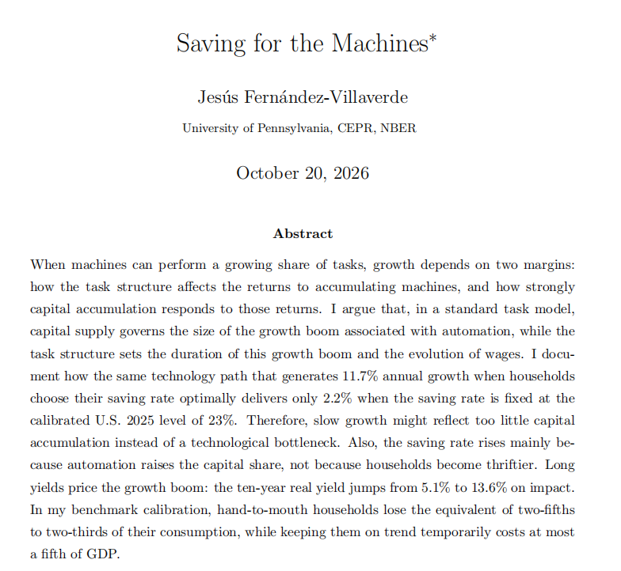
背景与关键数据
- 作者：Jesús Fernández-Villaverde（宾夕法尼亚大学，宏观经济学名家），2026 年 10 月 20 日。
- 任务模型（Task-based model）：把经济看成一堆"任务"，每个任务可以由人或机器完成。AI 进步 = 越来越多任务可以交给机器。
- 关键结论拆解：
- 增长幅度由资本供给决定：技术允许机器干活，但得有人出钱造机器。储蓄不够 → 机器不够 → 增长被卡住。
- 增长持续时间与工资路径由任务结构决定：还剩多少任务只能由人做，决定了工资会不会被压垮。
- 储蓄率上升是因为资本份额上升：收入更多地流向资本所有者，而富人本来储蓄率就高，并非大家变节俭。
- 长期利率暴涨：10 年期实际利率从 5.1% 跳到 13.6%——因为未来增长极快，资本回报极高，人们需要很高的利率才愿意借出钱。
- **"手停口停"家庭（hand-to-mouth）**福利损失相当于消费减少 40%–65%；暂时维持他们收入所需的转移支付最高约占 GDP 的 1/5。
图片解读
- 图片是论文首页：标题《Saving for the Machines》、作者、日期和英文摘要（Abstract），内容与 Jason 的中文概述一致。
为什么重要 / 对市场和经济的含义
- 对资产价格的含义：如果 AI 真的带来高增长，长期利率会大幅上升，这对高估值成长股的折现是压力，对债券是重大利空——"AI 繁荣"和"低利率"可能不能同时存在。
- 对分配的含义：拥有资本（股票、机器）的人会获益最多。结合帖 12：美国最富 1% 持有 47% 的股票，最穷 50% 只持有 1%——AI 红利主要通过股票分配，有没有资产会成为最大的分水岭。
- 对政策的含义：可能需要大规模再分配（相当于 GDP 的 1/5），这又会对财政和国债供给形成压力（联系帖 8）。
- Jason 的点评——"从技术经济学推进到资本积累和收入分配经济学"——点出这篇论文的价值：AI 不只是技术问题，更是"谁拥有机器"的问题。
延伸知识
- 索洛增长模型与"储蓄率决定水平，技术决定增长"：传统模型里，储蓄率高只能让经济达到更高的"水平"，长期增长靠技术进步。但如果机器能替代几乎所有劳动，资本就不再有"边际回报递减"，储蓄率就直接决定增长率了（经济学里叫 "AK 模型"）。
- 皮凯蒂的 r > g：当资本回报率 r 高于经济增长率 g，财富会越来越集中在资本所有者手里。这篇论文可以看成 AI 版本的 r > g 故事。普通人的应对思路：尽量把劳动收入转化为资本（持有股票等生产性资产）。
帖 10 · 中金投资者调查：滞胀判断主流，AI 泡沫担忧升温，偏好转向黄金和债券（美西 10-24 16:26）
中金调查的机构投资者整体变得更谨慎：海外看"滞胀"、担心 AI 泡沫和美股回调，国内看经济放缓、等降息，资产偏好从股票明显转向黄金、利率债和美债。读全文收起
帖子原文
中金调查： 本期调查结果来看，近期全球经济政策不确定性放大下，投资者对AI叙事的积极预期有所转向，也相对应带动了风险偏好有一定程度的回落，避险资产目前仍是投资者主流的配置资产类别。
对于国内经济，受访者普遍认为明年融资需求难见有效企稳回升，社融或维持低位增长，对货币政策的放松预期更为积极，也带动对明年国债利率中枢点位的判断上有所下移，投资者对AI股票强势的预期大幅下修，对权益市场能够回升的预期较低。投资者对黄金上涨的预期增强，近半数认为到2027年年底黄金会维持在4000-4500美元区间的水平。
"滞胀"仍是目前投资者对海外经济基本面的主流判断。海外市场方面，45%的投资者认为AI存在泡沫，叠加对其他行业的挤出，可能某个时刻会迎来股市和经济的较大回调。近七成受访者预计到2027年底前美股可能出现10%以上的调整。67%的投资者预计到2027年6月末美国10年期国债收益率将在4.5%以上，其中预计在5.0%以上的比例达到35%。 #金融#
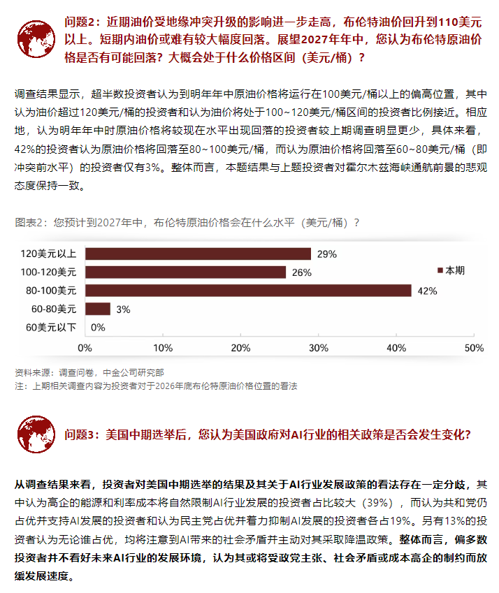
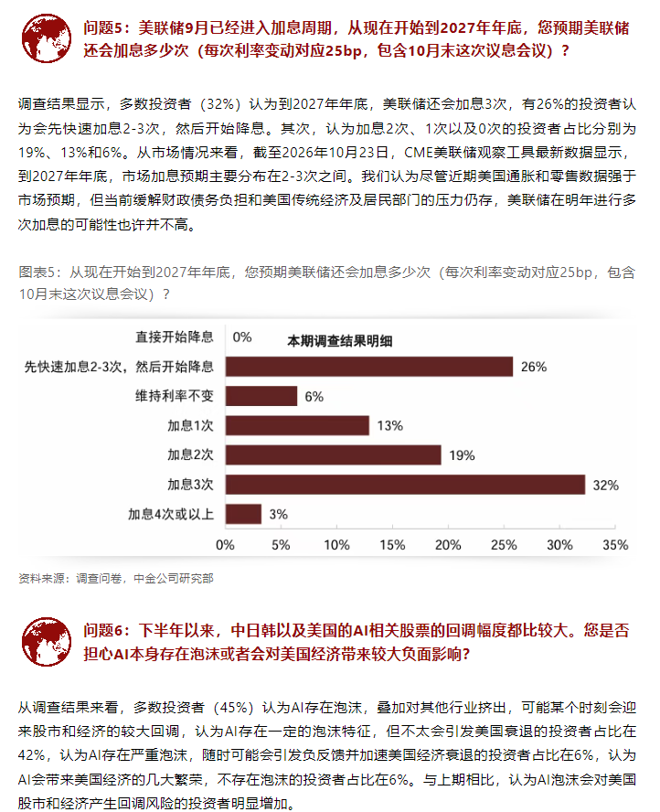
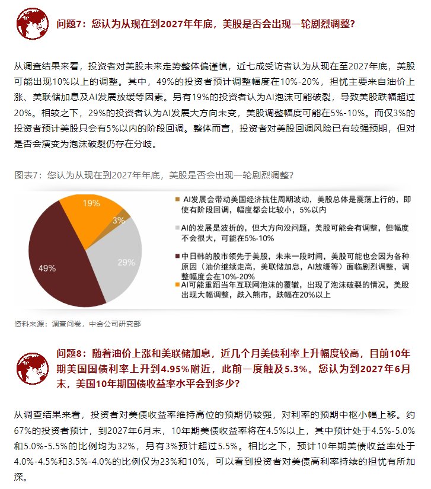
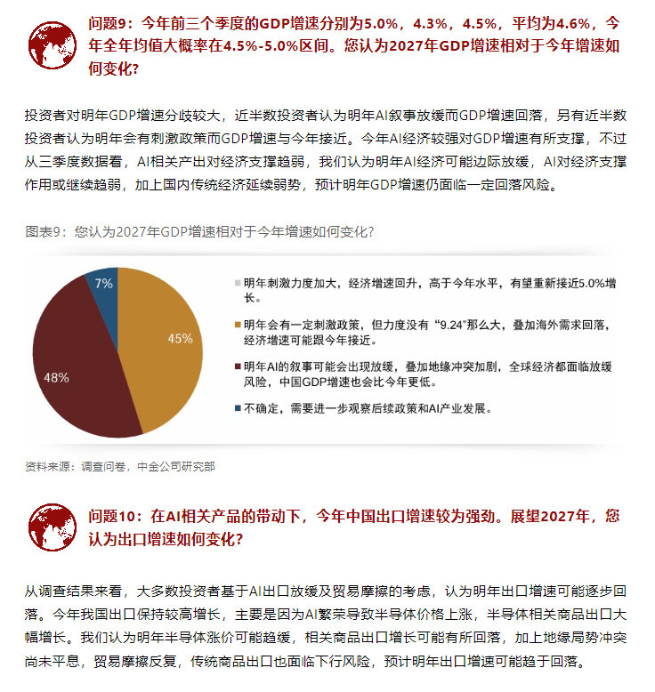
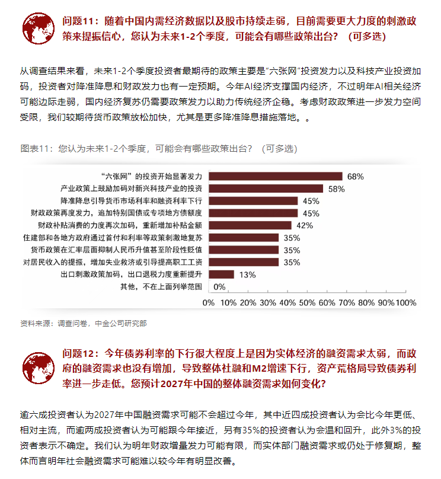
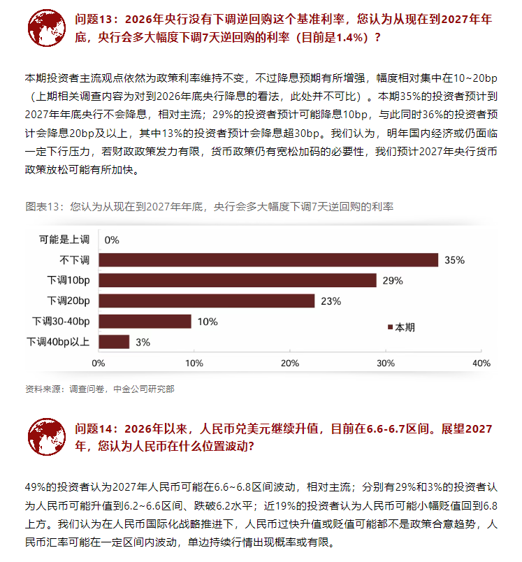
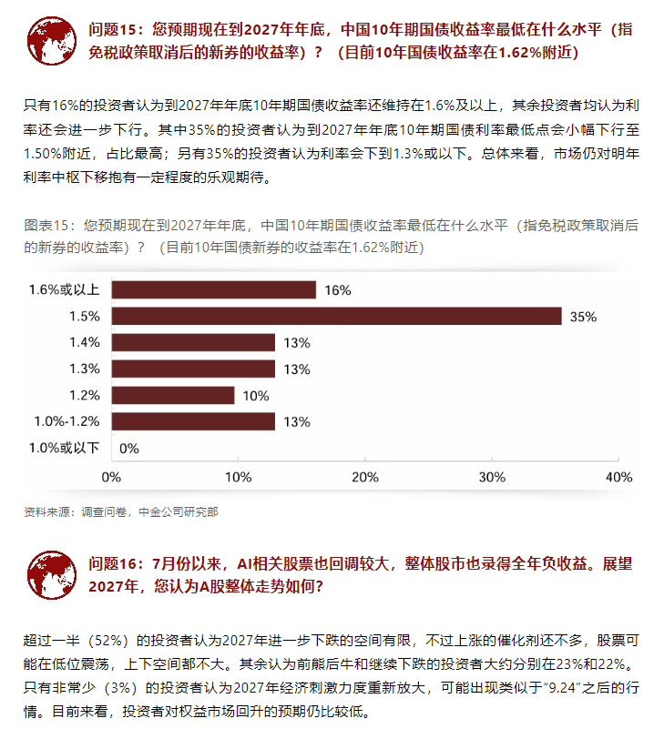
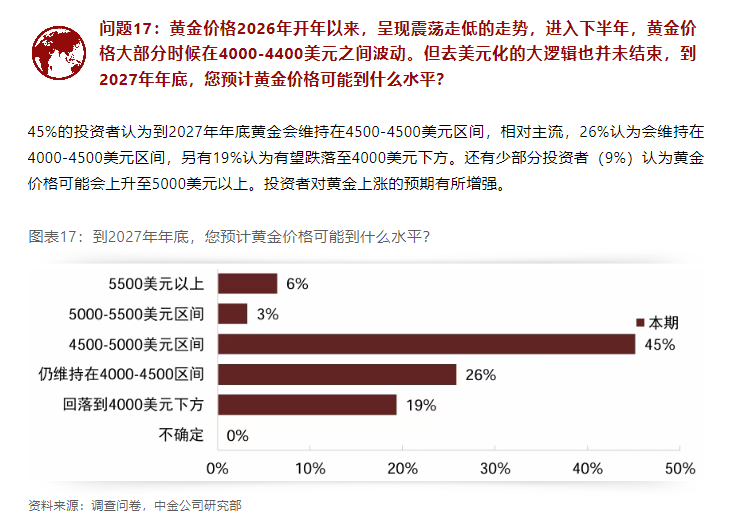
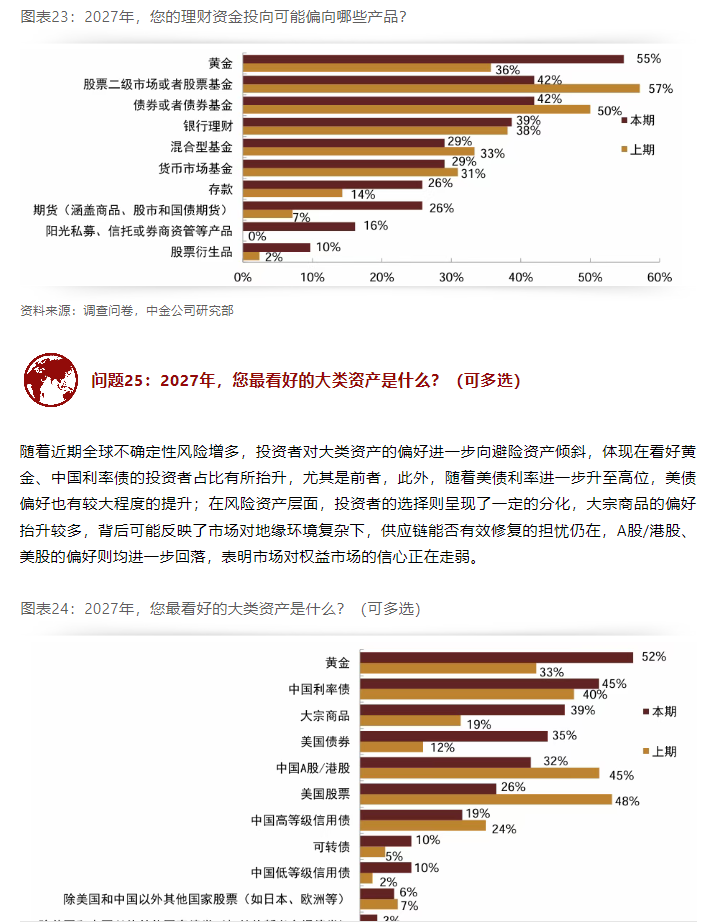
背景与关键数据
- 滞胀（Stagflation）：经济停滞（增长慢、失业升）+ 通胀高并存。它是央行最头疼的局面：降息会加剧通胀，加息会加剧衰退。
- 社融（社会融资规模）：实体经济从金融体系拿到的全部资金（贷款、债券、股票融资等），是中国信用扩张的综合指标。
- 7 天逆回购利率：中国人民银行的短期政策利率（相当于中国的"基准利率"），目前 1.4%。
- 降准降息：降准 = 降低银行必须存在央行的准备金比例，释放流动性；降息 = 降低政策利率。
- 注意：Jason 正文写"近半数认为黄金会维持在 4000–4500 美元"，但调查原图显示 45% 选的是 4500–5000 美元，选 4000–4500 的是 26%。中金正文里也写成了"4500–4500"的笔误，应以图为准。
图片解读（逐图）
- 问题 2–3：油价与 AI 政策。题干背景：布伦特原油回升到 110 美元以上。对 2027 年年中布油的预期：120 美元以上 29%、100–120 美元 26%、80–100 美元 42%、60–80 美元（冲突前水平）仅 3%。即超过一半认为明年年中油价仍在 100 以上。美国中期选举后 AI 政策：39% 认为高能源和利率成本会自然限制 AI 发展；共和党占优支持 AI、民主党占优抑制 AI 各 19%；13% 认为无论谁赢都会降温。
- 问题 5–6：美联储与 AI 泡沫。题干：美联储 9 月已进入加息周期。到 2027 年底：再加息 3 次 32%、先快速加息 2–3 次再降息 26%、加息 2 次 19%、1 次 13%、维持 6%、4 次以上 3%、直接降息 0%。CME 观察工具显示市场定价 2–3 次加息。AI 泡沫：45% 认为有泡沫且会引发较大回调、42% 有泡沫但不太会引发衰退、6% 严重泡沫、6% 无泡沫。
- 问题 7–8：美股与美债。到 2027 年底美股：49% 预计调整 10%–20%、19% 认为 AI 泡沫破裂跌超 20%、29% 预计 5%–10%、3% 预计 5% 以内。10 年期美债目前约 4.95%，此前一度触及 5.3%；到 2027 年 6 月末：4.5%–5.0% 32%、5.0%–5.5% 32%、5.5% 以上 3%、4.0%–4.5% 23%、3.5%–4.0% 10%。
- 问题 9–10：中国 GDP 与出口。2026 年前三季度 GDP 增速 5.0%、4.3%、4.5%，平均 4.6%。2027 年：48% 认为 AI 叙事放缓+地缘冲突会让增速更低、45% 认为有刺激但力度不及"9·24"、增速与今年接近、7% 不确定。出口：今年靠 AI 带动半导体涨价和出口，明年可能回落。
- 问题 11–12：政策预期与融资需求（可多选）："六张网"投资（国家推动的水网、电网、算力网、通信网等网络型基础设施）68%、科技产业政策 58%、降准降息 45%、财政加码（特别国债/专项债）45%、消费补贴 42%、住房政策 35%、抑制人民币升值 35%、提高居民收入 35%、出口刺激 13%。逾六成认为 2027 年融资需求不会超过今年。
- 问题 13–14：降息与人民币。7 天逆回购（1.4%）到 2027 年底：不下调 35%、降 10bp 29%、降 20bp 23%、降 30–40bp 10%、降 40bp 以上 3%。人民币目前 6.6–6.7：49% 认为在 6.6–6.8 波动、29% 认为升值到 6.2–6.6、3% 认为破 6.2、19% 认为回到 6.8 上方。
- 问题 15–16：中国国债与 A 股。10 年期国债目前 1.62%，到 2027 年底最低点：1.6% 及以上 16%、1.5% 35%、1.4% 13%、1.3% 13%、1.2% 10%、1.0%–1.2% 13%。A 股：52% 认为低位震荡、23% 先熊后牛、22% 继续下跌、3% 认为会有"9·24"式行情。
- 问题 17：黄金。题干：2026 年以来金价震荡走低，下半年多在 4000–4400 美元。到 2027 年底：4500–5000 美元 45%、4000–4500 美元 26%、跌破 4000 19%、5500 以上 6%、5000–5500 3%。
- 图表 23–24：资产偏好（本期 vs 上期）。理财资金投向：黄金 55%（上期 36%）、股票 42%（上期 57%）、债券 42%（50%）、银行理财 39%、存款 26%（14%）、期货 26%（7%）。最看好的大类资产：黄金 52%（33%）、中国利率债 45%（40%）、大宗商品 39%（19%）、美国债券 35%（12%）、A/H 股 32%（45%）、美国股票 26%（48%）。最明显的变化：美股偏好几乎腰斩，美债和大宗商品偏好翻倍以上。
为什么重要 / 对市场和经济的含义
- 共识与反向指标：这份调查描绘的是"机构共识"——高油价、加息、AI 泡沫、美股回调、买黄金。共识本身是信息，但当所有人都站在同一边时，也要警惕"拥挤交易"。有趣的是，调查中最受青睐的黄金，恰恰在这周跌破 4000（帖 2、帖 6）。
- 中美利率背离：美国在加息、10 年期约 5%；中国在等降息、10 年期 1.6%。约 3.3 个百分点的利差是人民币汇率和跨境资金流动的核心变量，但人民币却在升值（6.6–6.7），说明汇率主要由贸易顺差和美元走势驱动。
- 对 AI 的态度转向：上期调查里美股、A/H 股是最受欢迎资产，这期大幅下滑，反映"AI 叙事"在 2026 年下半年明显降温。
延伸知识
- 滞胀的历史参照：1970 年代：两次石油危机推高油价，美国通胀一度超过 13%，同时经济衰退。最终靠沃尔克把利率提到 20% 才压住通胀，代价是严重衰退。今天"高油价+美联储加息+长端利率 5%"的组合，让很多人联想到那个年代。
- 调查数据的读法：看"变化"比看"水平"更有用。比如美债偏好从 12% 到 35%，比单看 35% 更能说明情绪的转向。
帖 11 · 格隆汇：未来 25 年中国平均每天 6.3 万人退休（美西 10-24 16:28）
未来 25 年，中国每天约 6.3 万人跨过 60 岁，而每天新进入劳动年龄的只有约 3 万人——"退的多、进的少"，劳动力供给将持续收缩。读全文收起
帖子原文
格隆汇： 依据出生人口测算，从2026年到2050年这25年，我国累计会有5.7亿人迈入60岁，如果将60岁假设为退休年龄，则平均下来每天将有6.3万人退休。而同期累计新增劳动人口仅为2.8亿，即平均每天新增3万人。两者相比，新增的60岁人口是新增劳动人口的两倍不止。 #人口#
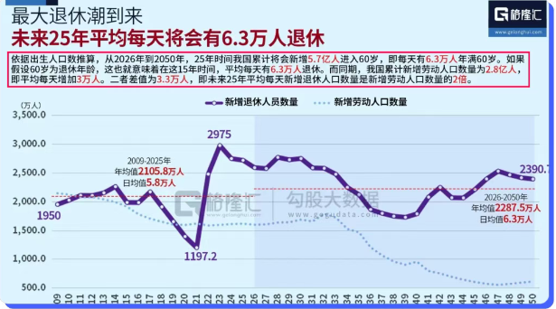
背景与关键数据
- 测算方法：60 年前出生的人，今年就满 60 岁。所以 2026–2050 年的"新增退休人数"由 1966–1990 年的出生人数决定，这正好是中国的第二次（1962–1975）和第三次（1981–1990）婴儿潮。
- 新增劳动人口：大致对应约 20 年前出生的人（2006–2030 年出生），这批人出生规模小得多，2017 年后出生人口更是快速下降。
- 25 年累计：5.7 亿进入 60 岁 vs 2.8 亿进入劳动年龄，差值约 2.9 亿（日均差 3.3 万人）。
- 注意：中国正在实施渐进式延迟退休（男性逐步从 60 岁延到 63 岁），所以"60 岁 = 退休"是简化假设，实际退休节奏会稍慢。
图片解读
- 格隆汇图《最大退休潮到来》：横轴 2009–2050 年，纵轴万人。紫色实线 = 每年新增 60 岁人口（新增退休人员），蓝色虚线 = 每年新增劳动人口。
- 紫线：2009 年约 1950 万；2021 年跌到 1197.2 万的低谷（对应 1961 年三年困难时期出生人口极少）；2023 年飙升到 2975 万的峰值（对应 1963 年婴儿潮最高峰）；此后在 2500–2800 万之间，2030 年代中期降到约 1800 万（对应 1970 年代后期计划生育后的低谷），2040 年代又回到约 2400–2500 万（对应 1980 年代后期第三次婴儿潮），2050 年约 2390.7 万。
- 两个阶段平均：2009–2025 年均 2105.8 万（日均 5.8 万）；2026–2050 年均 2287.5 万（日均 6.3 万）。
- 蓝色虚线：2009–2025 年大致在 1600–2100 万之间，与退休线差不多；2030 年后急剧下降到 600–1000 万，两条线之间的"剪刀差"越拉越大。
为什么重要 / 对市场和经济的含义
- 养老金压力：缴费的人少、领钱的人多，养老金"抚养比"恶化，财政需要更多补贴，这也是延迟退休的直接原因。
- 劳动力与工资：劳动力供给收缩会推高工资、倒逼自动化——这与帖 9（AI 替代劳动）、帖 13（AI 影响职业）连成一条线：人口老龄化恰好给了 AI 和机器人一个"补位"的需求场景。
- 消费结构：银发经济（医疗、养老、康养、老年消费）需求上升，而婚育、住房等年轻人主导的需求下降（联系帖 1）。
- 利率：人口老龄化、储蓄需求高、投资需求弱，通常对应长期低利率——这是中国 10 年期国债收益率跌到 1.6% 的深层原因之一（联系帖 10）。
延伸知识
- "人口红利"与"人口负债"：劳动年龄人口占比上升的阶段（中国大约 1980–2010 年）叫人口红利期，储蓄多、劳动力便宜、增长快；反过来就是"人口负债"。日本 1990 年代后的经历是常被拿来对照的样本（联系帖 7）。
- 出生"回声"效应：婴儿潮出生的人在 20–30 年后进入婚育年龄，又会带来一个小高峰，叫"回声婴儿潮"。图中 2040 年代的第二个退休高峰，就是 1960 年代婴儿潮的"回声"（1980 年代出生的那一代）。
帖 12 · 高盛：美国家庭仍在大买股票，最富 1% 持有 47%（美西 10-24 16:35）
美国家庭仍是美股最大的买家和持有者（上半年买了 8400 亿美元），股票占家庭金融资产的比例创历史新高，但财富高度集中：最富 1% 持有近一半。读全文收起
帖子原文
高盛： 美国股票的家庭总需求依然强劲。美联储数据显示，2026年上半年家庭部门购买了8400亿美元的美国股票。从持有看，最富有的1%拥有47%的股票。 #美股#
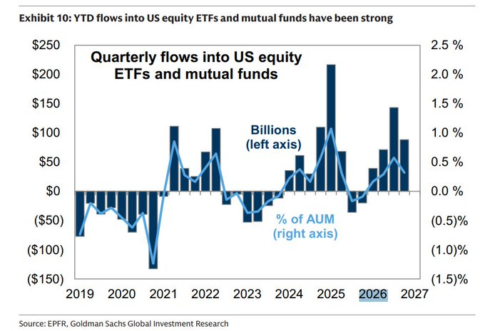
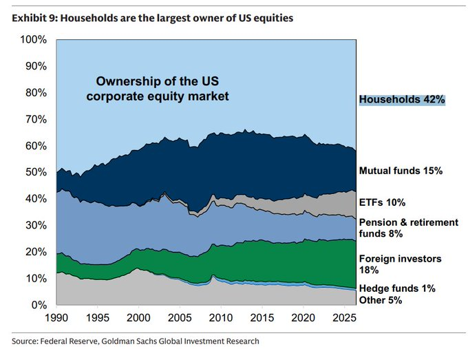
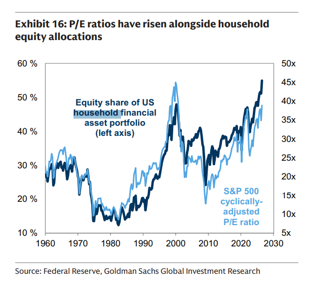
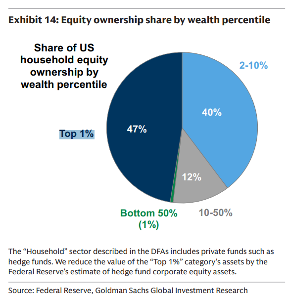
背景与关键数据
- 数据来源：美联储《金融账户》（Z.1）和《分布式金融账户》（DFA），由高盛整理。
- 家庭部门：美联储统计里的"家庭"包括对冲基金等私募基金，高盛在分布图里已把对冲基金持股从"最富 1%"里扣除。
- CAPE（周期调整市盈率）：用过去 10 年经通胀调整的平均盈利计算的市盈率，平滑了经济周期的影响，是衡量股市长期贵不贵的常用指标。
图片解读
- 图 1《Exhibit 10：美国股票 ETF 和共同基金的季度资金流》（EPFR）：深蓝柱为季度净流入金额（左轴，十亿美元），浅蓝线为占资产规模的比例（右轴）。2019–2020 年持续流出；2021 年大幅流入；2022–2023 年转为流出；2024 年起重新流入，2025 年初有一个约 2150 亿美元的单季峰值；2026 年各季度均为净流入，最近两个季度分别约 1450 亿和 880 亿美元。
- 图 2《Exhibit 9：家庭是美股最大的持有者》：1990–2026 年美国公司股票的持有结构（堆积面积图）。最新：家庭 42%、外国投资者 18%、共同基金 15%、ETF 10%、养老金 8%、其他 5%、对冲基金 1%。趋势上：ETF 份额从几乎为零升到 10%，外国投资者份额从约 7% 升到 18%，养老金份额从 1990 年的约 23% 降到 8%（从固定收益型养老金转向个人 401k，钱改为通过共同基金/ETF 持有）。
- 图 3《Exhibit 16：市盈率随家庭股票配置一起上升》：深蓝线 = 股票占家庭金融资产的比例（左轴），浅蓝线 = 标普 500 CAPE（右轴），1960–2026 年。两条线高度同步：1982 年低点约 13%（CAPE 约 7 倍），2000 年互联网泡沫峰值约 48%（CAPE 约 44 倍），2009 年低点约 25%（CAPE 约 13 倍）；最新股票配置比例约 55%，超过 2000 年峰值创历史新高，CAPE 约 38 倍左右（仅次于 2000 年）。
- 图 4《Exhibit 14：按财富分位的股票持有占比》：最富 1% 持有 47%，第 2–10 百分位 40%，第 10–50 百分位 12%，最穷的 50% 只持有 1%。即最富 10% 合计持有 87% 的美国家庭股票。
为什么重要 / 对市场和经济的含义
- 资金面强劲：家庭持续买入是美股的重要支撑，不需要靠机构"接盘"。
- 但位置极高：家庭股票配置比例创纪录、估值接近 2000 年，意味着家庭财富对股市的敏感度空前高。股市一旦大跌，"财富效应"反转会直接打击消费（而消费是美国 GDP 的约 7 成），对经济的冲击会比过去更大。
- 分配含义：股市上涨主要惠及最富的 10%。这与帖 9 论文（AI 时代资本所有者获益、无资产者受损）高度呼应——AI 红利如果通过股价兑现，分配会更不均。这也是美国"K 型经济"（富人消费强、普通人消费弱）的根源之一。
- 与帖 3 一起看：摩根大通说美股估值会拖累长期回报，高盛的图则显示估值和配置都在高位——两家机构从不同角度指向同一个结论。
延伸知识
- "家庭股票配置比例"作为长期回报预测指标：有一个著名的研究（"The Single Greatest Predictor of Future Stock Market Returns"，Philosophical Economics 博客）发现，投资者股票配置比例与未来 10 年回报的负相关性甚至强于 CAPE。逻辑是：当所有人都已经满仓股票时，新的买家从哪里来？
- 财富效应：股票、房产等资产价格上涨让人"感觉更富"，从而增加消费。研究估计美国每 1 美元股票财富增加大约带来 2–5 美分的消费增加。反过来，股市大跌也会让消费收缩。
帖 13 · 摩根大通：到 2040 年美国 72% 的工作任务受 AI 影响（美西 10-24 16:44）
摩根大通估计到 2040 年，美国现有工作任务中约 72% 会受 AI 影响；白领知识型岗位暴露最高，体力劳动岗位主要受机器人影响。读全文收起
帖子原文
JPM： 预计到2040年，美国当前各职业中有多少比例的工作任务将受到AI影响。计算机和数学、商业和金融岗位AI曝露风险极高。 #职业#
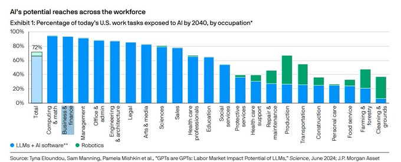
背景与关键数据
- "AI 曝露度"（AI exposure）：一个职业的工作任务里，有多大比例可以被 AI 显著加速或完成。曝露 ≠ 失业：既可能是被替代，也可能是被增强（人用 AI 做得更快）。
- 数据基础：Eloundou、Manning、Mishkin 等人 2024 年 6 月发表在《Science》上的论文《GPTs are GPTs》（"GPT 是通用目的技术"），摩根大通资管在此基础上延伸到 2040 年，并加入机器人。
图片解读
- 《Exhibit 1：到 2040 年美国各职业工作任务受 AI 影响的比例》：蓝色 = 大语言模型 + AI 软件，绿色 = 机器人。
- 总计约 72%（其中少部分来自机器人）。
- 曝露最高（90% 以上）：计算机与数学（约 94%）、商业与金融（约 93%）、管理（约 91%）；接着是办公与行政（约 88%）、工程与建筑（约 87%）、法律（约 85%）、艺术与媒体（约 82%）、科学（约 79%）、销售（约 77%）。
- 中等：医疗专业人员（约 67%）、教育（约 65%）、社会服务（约 54%）。
- 体力型职业主要靠机器人：生产制造（约 67%，其中约 40 个百分点来自机器人）、交通运输（约 54%）、维修（约 45%）、农林（约 47%）、清洁与场地维护（约 37%，几乎全部来自机器人）。
- 最低：个人护理（约 26%）、餐饮服务（约 33%）、建筑（约 36%）、防护服务（约 39%）。
为什么重要 / 对市场和经济的含义
- 和以往的自动化不同：过去的自动化（流水线、ATM）主要冲击蓝领和低技能岗位；这一轮 AI 首先冲击高学历、高收入的白领，这在经济史上很少见。
- 生产率与工资分配：如果 AI 主要用于"增强"，白领生产率大幅提升、工资可能上涨；如果主要用于"替代"，则会压低白领工资、提高资本份额——这正是帖 9 论文模型里的核心机制。
- 对投资：受益方是提供 AI 能力的公司（算力、模型、软件）和成功应用 AI 降本的公司；受压方可能是按人头收费的外包、咨询、部分 SaaS 业务。
- 和人口问题的交叉：帖 11 显示中国劳动力在快速收缩，从这个角度看，AI 和机器人对老龄化社会可能是"补位"而非"抢饭碗"。
延伸知识
- "莫拉维克悖论"（Moravec's Paradox）：对人来说难的事（下棋、写代码、做数学题）对 AI 反而容易；对人来说简单的事（走路、叠衣服、清洁）对机器人反而难。这就是为什么图中白领曝露度最高，而清洁、个人护理反而最低。
- 通用目的技术（GPT）：像蒸汽机、电力、互联网一样，能渗透到几乎所有行业的技术。历史经验是：通用目的技术的生产率效应往往要滞后 10–20 年才在宏观数据里显现（"索洛悖论"：到处都能看到计算机，除了生产率统计里）。
今日全图索引
| 帖号 | 时间（美西） | 主题 | 标签 | 图片文件名 |
|---|---|---|---|---|
| 帖 1 | 10-24 01:30 | 中国 2025 年初婚人数 1042 万 | #自制图表# | post1_img1.png、post1_img2.png |
| 帖 2 | 10-24 02:13 | FT：黄金避险时反跌，2008 年来罕见背离 | #金融# | post2_img1.png |
| 帖 3 | 10-24 15:18 | 摩根大通 LTCMA：全球股票长期回报 7–8% | #股市# | post3_img1.png、post3_img2.png |
| 帖 4 | 10-24 15:37 | 巴克莱：库存耗尽、伊朗冲突难解，油价风险偏上 | #金融# | post4_img1.png |
| 帖 5 | 10-24 15:45 | 美国第三支航母打击群开赴波斯湾，中东多线紧张 | #其他国家经济# | post5_img1.png、post5_img2.png、post5_img3.png |
| 帖 6 | 10-24 15:58 | Katusa：黄金回到 3950–4050 支撑区，RSI 33 | #金融# | post6_img1.png |
| 帖 7 | 10-24 16:02 | 日本人口动态：自然减少放缓，8 月结婚 +61.8% | #其他国家经济# | post7_img1.png |
| 帖 8 | 10-24 16:09 | IMF 论文：美国国债供给冲击的全球溢出 | #论文或书籍推荐# | post8_img1.png（附 PDF） |
| 帖 9 | 10-24 16:16 | NBER 论文《为机器储蓄》：AI 增长与分配 | #论文或书籍推荐# | post9_img1.png（附 PDF） |
| 帖 10 | 10-24 16:26 | 中金投资者调查：滞胀、AI 泡沫、偏好黄金和债券 | #金融# | post10_img1.png ~ post10_img9.png |
| 帖 11 | 10-24 16:28 | 格隆汇：未来 25 年每天 6.3 万人退休 | #人口# | post11_img1.png |
| 帖 12 | 10-24 16:35 | 高盛：美国家庭大买股票，最富 1% 持有 47% | #美股# | post12_img1.png ~ post12_img4.png |
| 帖 13 | 10-24 16:44 | 摩根大通：2040 年 72% 工作任务受 AI 影响 | #职业# | post13_img1.png |